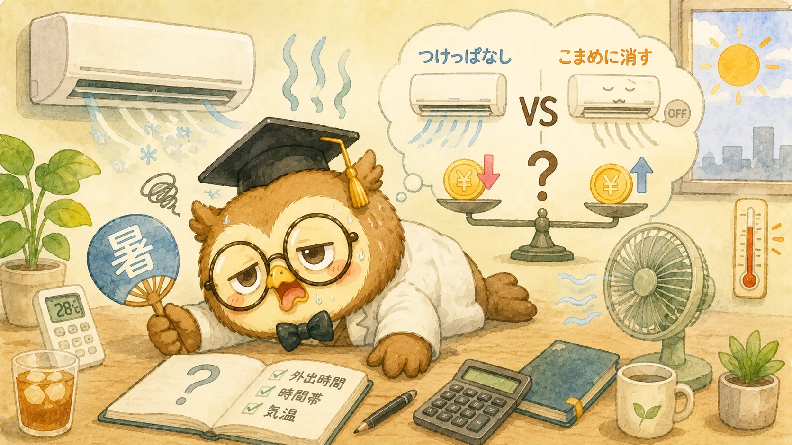

1. 結論——短い外出なら「つけっぱなし」が無難
先に結論をお伝えします。ひとつの目安として、気温が高い日中で「30分程度の短い外出」なら、こまめに消すよりつけっぱなしのほうが電気代は安い、または差が小さくなる傾向があります。一方で、1〜2時間以上の外出や、比較的涼しい朝や夜は、消したほうが安くなりやすいです。
「え、つけっぱなしのほうが安いことがあるの？」と意外に思うかもしれません。その理由は、エアコンが電気を使うタイミングにあります。次の章で、その仕組みを見ていきましょう。なお、ここで紹介するのはあくまで目安です。部屋の広さ・断熱性能・機種・外気温によって結果は変わるため、「必ずこうなる」とは言い切れない点だけ、先にお伝えしておきます。

2. なぜつけっぱなしが得な場合があるのか
ポイントは、エアコンは「部屋を設定温度まで冷やす立ち上がりのとき」に最も多くの電気を使うという点です。暑い部屋を一気に冷やすには大きなパワーが必要で、この間はほぼフルパワーで運転します。
そして、部屋が設定温度に達したあとは、その温度を保つだけの弱い運転に切り替わり、消費電力はぐっと下がります。つまりエアコンの電気の使い方は、「立ち上がりは大きく、そのあとは小さく」というイメージです。
- 立ち上がり（暑い部屋を冷やす）……電力大
- 安定運転（設定温度を保つ）……電力小
ここで、短時間だけ消して外出し、戻ってきてまたつけると何が起こるでしょうか。留守の間に部屋はまた暑くなっているので、電力の大きい「立ち上がり」をもう一度やり直すことになります。短い外出でこれを繰り返すと、つけっぱなしで弱く運転し続けたほうが、かえって電気代が少なく済む——というわけです。
逆に、長時間の外出なら話は別です。留守の間ずっと安定運転を続ける電力より、いったん消してしまってから帰宅時に一度だけ立ち上げるほうが、トータルの電力は少なくなります。「立ち上がりの回数」と「留守中に運転を続ける時間」のどちらが大きいかで、得か損かが決まるのです。
3. 判断の分かれ目は「外出時間・時間帯・気温」
つけっぱなしが得か、消すのが得かを分けるのは、主に次の3つの条件です。
① 外出時間の長さ
もっとも影響が大きいのが外出時間です。ゴミ出し・近所の買い物・子どものお迎えなど30分前後の短い外出なら、つけっぱなしのほうが無難。一方、1〜2時間以上まとまって家を空けるなら、消したほうが安くなりやすいです。目安として「30分以内は消さない、1時間を超えるなら消す」と覚えておくと判断が楽になります。
② 時間帯と外気温
同じ外出時間でも、気温が高い日中はつけっぱなしが有利になりやすく、気温が下がる朝夕はこまめに消すのが有利になりやすいです。外が暑いほど、留守中に部屋の温度が上がりやすく、つけ直したときの立ち上がりが大きくなるためです。真夏の昼間は「つけっぱなし寄り」、朝や夜は「消す寄り」と覚えておきましょう。
③ 部屋の断熱性能
断熱性の高い部屋や、日差しを遮っている部屋は、消しても温度が上がりにくいため、こまめに消しても損しにくくなります。逆に、西日が強く入る部屋や築年数の古い住宅は温度が上がりやすく、つけっぱなしのメリットが出やすい傾向があります。
- つけっぱなしが向く……日中の暑い時間帯／30分程度の短い外出／断熱の弱い部屋
- こまめに消すが向く……朝夕の涼しい時間帯／1〜2時間以上の外出／断熱のよい部屋
4. エアコンの電気代を計算してみよう
そもそもエアコンの電気代はいくらなのか、基本の式で確認しておきましょう。電気代は次の式で計算できます。
消費電力（kW） × 使用時間（時間） × 電力量単価（円/kWh） = 電気代
ここでは、エアコンの平均的な消費電力を600W（＝0.6kW）、電力量単価を全国平均の目安である31円/kWhとして計算してみます。1時間あたりは 0.6 × 1 × 31 ＝ 約19円 です。使用時間ごとにまとめると次のようになります。
| 1日の使用時間 | 1日の電気代 | 1か月（30日） |
|---|---|---|
| 4時間 | 約74円 | 約2,200円 |
| 8時間 | 約149円 | 約4,500円 |
| 12時間 | 約223円 | 約6,700円 |
| 24時間 | 約446円 | 約1万3,400円 |
※消費電力600W・電力量単価31円/kWhで単純計算した目安です。実際は設定温度に達したあと消費電力が下がるため、これより安くなることが多いです。
この表は「ずっと600Wで運転し続けた場合」の上限に近い目安です。実際には、部屋が冷えたあとは消費電力が下がるので、つけっぱなしでも表の金額より安くなるのが普通です。逆にいえば、暑い部屋を何度も冷やし直すと、立ち上がりのぶんだけ600Wに近い運転が増えて割高になるということでもあります。ご家庭のエアコンの消費電力（本体や説明書に記載）を使った具体的な金額は、電気代計算ツールで数字を入れるとすぐに確認できます。
5. つけっぱなしを安くするコツ5つ
つけっぱなしにするなら、少しの工夫で電気代をぐっと抑えられます。我慢せずに安くするコツを5つ紹介します。
① 設定温度は1℃高めに
冷房の設定温度を1℃上げるだけで、約10%の節電が目安とされています。28℃を目安に、暑ければ風量やサーキュレーターで調整するほうが、温度を下げすぎるより効率的です。
② 風量は「自動」にする
節約のつもりで「弱風」に固定するのは逆効果になりがちです。弱風だと部屋がなかなか冷えず、立ち上がりの時間が長引いてしまいます。「自動」なら一気に冷やしてから省エネ運転に移るので、早く快適になり、結果的に電気代も抑えられます。
③ フィルターをこまめに掃除する
フィルターにホコリがたまると風の通りが悪くなり、同じ涼しさを得るのに余計な電力がかかります。2週間に1回を目安に掃除すると、効きが良くなり節電にもつながります。
④ サーキュレーターや扇風機を併用する
冷たい空気は下にたまりやすいので、サーキュレーターで空気をかき混ぜると、部屋全体が早く均一に涼しくなります。設定温度を下げすぎずに済むため、エアコン単体より快適さと節電を両立しやすくなります。
⑤ 日差しを遮る
遮光カーテンやすだれで直射日光を遮ると、室温の上昇を抑えられ、エアコンの負担が軽くなります。特に西日の入る部屋では効果が大きい対策です。
6. 逆に「消したほうがいい」ケース
もちろん、つけっぱなしが万能というわけではありません。次のような場合は、こまめに消したほうが電気代の節約になります。
- 1〜2時間以上の外出……留守中ずっと運転を続けるより、帰宅時に一度立ち上げるほうが安くなりやすい。
- 朝晩の涼しい時間帯……外気温が下がっていれば、消しても部屋の温度が上がりにくい。窓を開けて風を通すだけで十分なことも。
- 就寝後にタイマーで十分なとき……一晩中つけっぱなしにするより、切タイマーや温度が上がったら再びつく機能を活用すると無駄が減る。
- 外出が長く、帰宅時間が読めるとき……最近は外出先からスマホで操作できる機種もあり、帰宅の少し前に入れれば、留守中の運転をゼロにできる。
大切なのは「つけっぱなしか、消すか」を白黒で決めることではなく、その日の外出時間と時間帯に合わせて使い分けることです。
7. やりがちな逆効果の節約
よかれと思ってやっている行動が、実は電気代を増やしていることもあります。代表的な3つを確認しておきましょう。
逆効果① 数分の外出のたびに消す
トイレや洗濯物を干すためのほんの数分の離席でこまめに消すと、立ち上がりを繰り返すだけで節約になりません。30分以内の外出なら、つけたままのほうが無難です。
逆効果② 節約のために弱風で我慢する
前述のとおり、弱風固定は部屋が冷えるまでに時間がかかり、かえって電力を使うことがあります。風量は自動に任せましょう。
逆効果③ 暑いのに我慢して電源を切る
もっとも避けたいのがこれです。電気代を気にしてエアコンを我慢し、熱中症になっては元も子もありません。健康を守ることが最優先で、そのうえで賢く節約する、という順番を忘れないでください。
よくある質問
計算ツールで電気代を確認しよう
「うちのエアコンだと実際いくら？」を知るには、消費電力と使用時間を入れるだけで金額が出る計算ツールが便利です。つけっぱなしの時間ごとの電気代を試算して、我慢しすぎない節約の目安にしてください。
まとめ
- どちらが得かは「外出時間・時間帯・気温」で変わる
- エアコンは立ち上がりに電力を多く使い、安定運転中は少ない
- 目安は「30分以内の外出はつけっぱなし、1時間超なら消す」
- 日中の暑い時間帯はつけっぱなし寄り、朝夕は消す寄り
- 設定温度1℃アップで約10%節電／風量は「自動」が効率的
- 節約より健康が最優先。我慢して熱中症は絶対に避ける
2026年時点の電気料金・家電の消費電力・エアコンの一般的な仕組みを参考にしています。電気代は部屋の広さ・断熱性能・機種・外気温・契約プランによって変わるため、記載の金額はあくまで目安です。